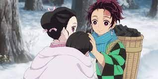
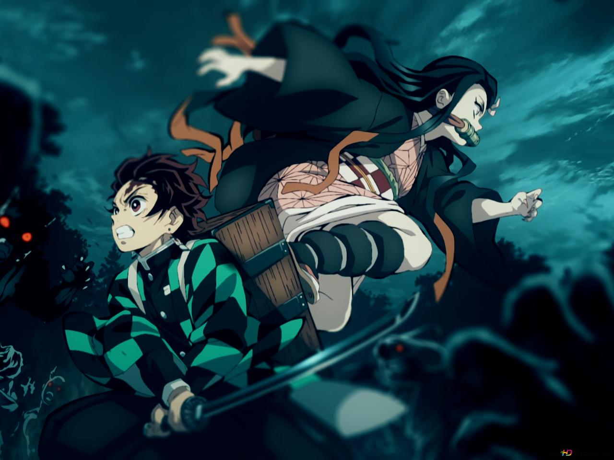
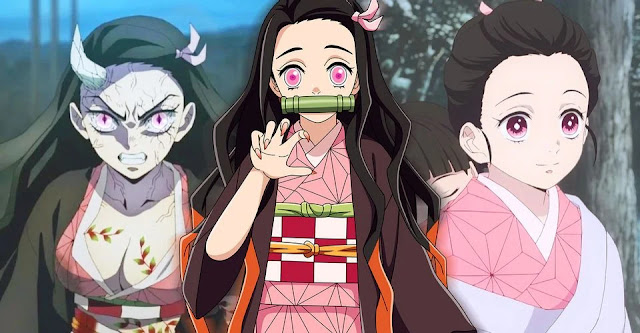
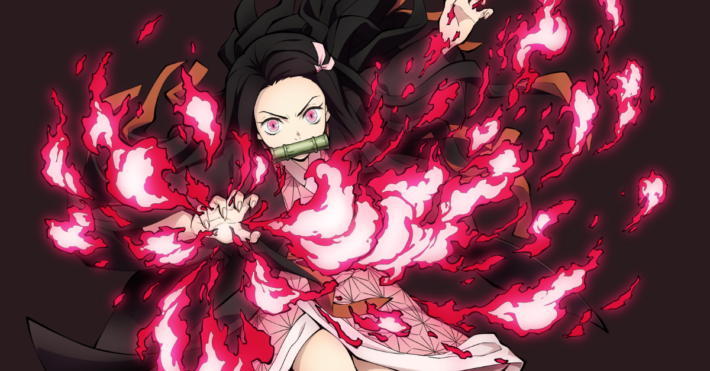
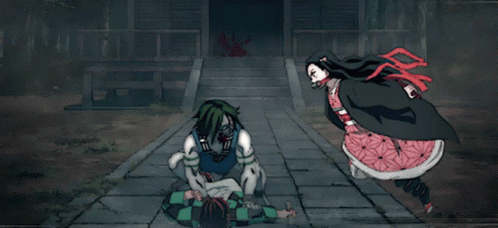
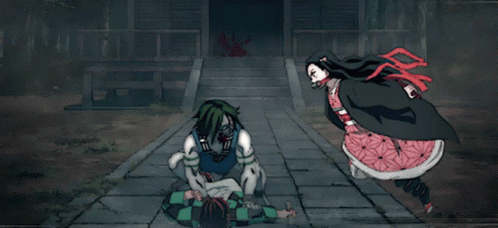

Nezuko Kamado
História
Antes de sua vida mudar com a transformação em demônio, Nezuko vivia tranquilamente, ajudando sua mãe
nas tarefas domésticas, bem como o irmão mais velho fazia. Um dia antes da tragédia acontecer, Tanjirou
foi à cidade com o intuito de trabalhar, pois sustentava a família vendendo carvão desde a morte do seu
pai. O garoto passou a noite fora, na casa de um conhecido, Saburo. Quando acordou e voltou ao lar,
percebeu que seus familiares estavam todos mortos, exceto uma pessoa: Nezuko. Os parentes haviam sido
vítimas de um ataque de um demônio — mais tarde revelado sendo o mais poderoso, Muzan Kibutsuji.
Tentando ajudar a irmã, Tanjirou a carregou nas costas, visando chegar ao vilarejo mais próximo, já que
a menina estava gravemente ferida. No entanto, Nezuko mostrou um comportamento agressivo e tentou
atacá-lo, a única coisa que a impediu foi o cabo do machado de Tanjirou e um caçador de demônios, Giyuu
Tomioka, que pretendia matá-la. Aflito, o irmão pediu piedade, mas o homem insistia que a menina havia
virado uma das criaturas porque o sangue deles tinha entrado em uma das suas feridas. Todavia, Nezuko
passou a tentar proteger o irmão do desconhecido; a partir desse momento, Tomioka Giyuu o indicou para
fazer uma visita ao velho Urokodaki e receber treinamento. Mais tarde, sob a luz do dia, Kamado cavou um
buraco e ficou escondida no lugar, até Tanjirou arrumar uma cesta de palha, começando a carregá-la no
objeto.

No caminho, depararam-se com um demônio, e a menina ajudou a combatê-lo, defendendo seu familiar, nisso
Urokodaki os encontrou e deu início ao árduo treinamento de Tanjirou, que levou cerca de dois anos.
Nesse tempo, ela permaneceu inconsciente, mas estranhamente um médico fez exames com urgência nela e não
notou nenhuma irregularidade. Era nítido, conquanto, que aquilo não era algo normal. Posteriormente,
depois de Tanjirou retornar da Seleção Final e virar um caçador de demônios, Nezuko despertou, quebrando
a porta da casa com um chute e indo abraçá-lo. Com isso, a demônio segue em aventura com o irmão desde
então.
Ao lado do parente na primeira missão do rapaz como membro da milícia dos matadores de demônios, Nezuko
esteve presente em uma cidade onde estava acontecendo vários desaparecimentos de garotas, supostamente,
coisas de comedores de humanos. Descobrindo a verdadeira identidade do culpado, um demônio que capturava
meninas com idade abaixo dos 16 anos para um subterrâneo em uma dimensão

semelhante a um pântano, os
irmãos Kamado entraram em combate pouco tempo depois de chegarem à cidade. Nezuko, inicialmente, ficou
dentro do caixote nas costas de Tanjirou, mas depois entrou em cena e salvou o rapaz quando ele estava
prestes a sofrer um forte golpe, saindo do objeto deslumbrantemente.
Ela também protegeu alguns civis. Em dado momento, o demônio criou diversos clones, e, enquanto o irmão
da menina lutava contra o corpo principal, Nezuko lutou e espancou, até com facilidade, as cópias do
monstro. Esses acontecimentos foram curtos e os irmãos acabaram, depois do sucesso na missão, sem graves
ferimentos. Depois disso, os dois partiram em direção a Asakusa.
Habilidades
Enquanto humana, Nezuko não possuía habilidade alguma em batalha, porém, como é fato notório, ela ganhou força para lutar quando foi infectada por Muzan. Como um demônio, ela retém várias capacidades, tais como: força acima do normal, que gera um poder estrondoso em seus golpes, principalmente nos chutes, capazes de arrancar partes dos corpos de outros demônios; habilidade de mudar estrutura corporal, conseguindo tanto ficar pequena quanto grande; e a agilidade, usufruindo de uma velocidade enorme para se movimentar, saltando a grandes alturas e correndo rápido.
Apesar de não ter passado por qualquer treinamento sobre combate, Nezuko é capaz de “bater de frente” contra demônios que possuem centenas de anos de experiência, agindo somente com o instinto — o sangue de Muzan Kibutsuji pode influenciar isso —, podendo pelejar aplicando golpes ortodoxos de lutas. Sua força aumenta exponencialmente quando ela entra em sua forma demoníaca quase completa. Além disso, Nezuko consegue, mesmo sem experiência, utilizar as técnicas demoníacas de sangue, que são os principais meios de combate de demônios de alto patamar.

 Até aqui, ela usou seu sangue para executar essa técnica poucas vezes. Embora seja um oni, a jovem precisa recuperar suas energias e, normalmente, isso seria se alimentando, mas Nezuko consegue se restabelecer apenas dormindo, sem consumir alguma vida humana. Porém isso faz com que muitas vezes descanse por dias — uma vez durou dois anos, fazendo Tanjiro se preocupar. A Kamado possui um aprendizado muito rápido perante suas batalhas, exemplo disso foi na luta contra Susamaru, embora perdendo um membro, ela logo conseguiu se adequar aos movimentos da rival e bater de frente com tal, até mesmo a ultrapassando nas destrezas. Com o tempo, Nezuko acaba aumentando suas habilidades regenerativas, tendo a capacidade de recuperar membros corporais em uma velocidade extraordinária.
 
